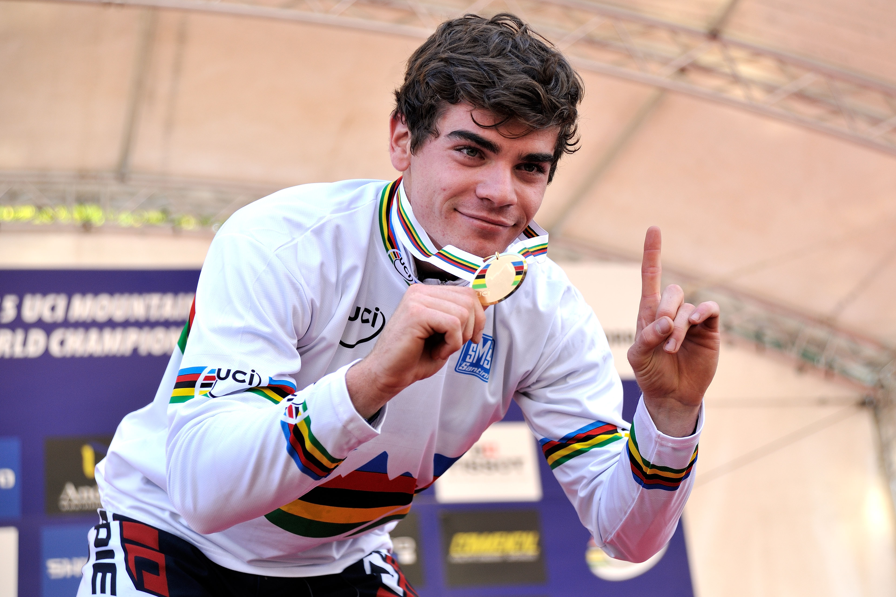

Je vais vous présenter notre champion français du VTT Descente.
Loïc Bruni, né le 13 mai 1994 à Nice1,2, est un coureur cycliste français spécialiste de VTT de descente. Il est notamment quadruple champion du monde de descente en 2015, 2017, 2018, 2019 et vice champion en 2020.